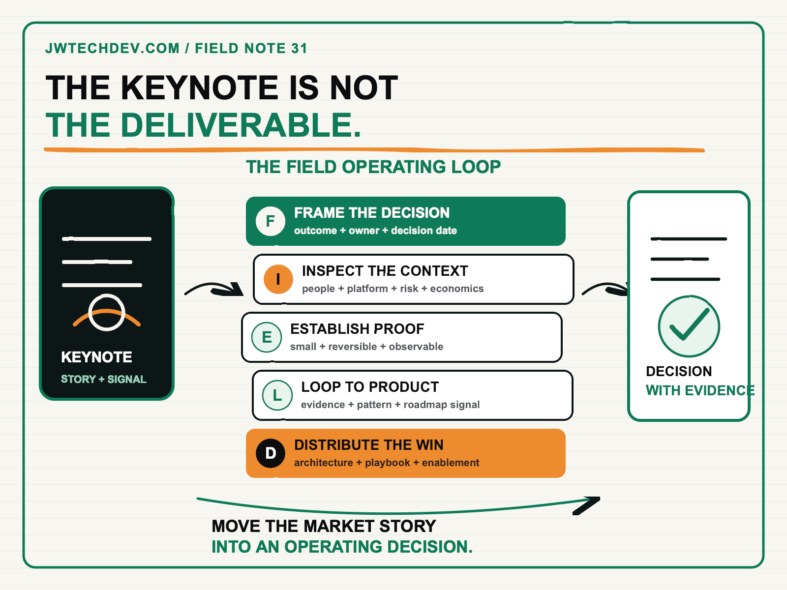

What a field CTO should actually do after the keynote.
The keynote is not the deliverable. A field CTO earns the title by converting an executive technology story into a decision, a credible proof path, a product feedback loop, and a capability the field can reuse.

Quick answer
After a keynote or executive briefing, a field CTO should produce five things: a framed business decision, a map of the operating constraints, a small and observable proof, a structured feedback loop into product and engineering, and a reusable asset for the broader field. I call this the FIELD operating loop: Frame, Inspect, Establish, Loop, Distribute.
The role is not a more senior version of product marketing, and it is not an architect who appears only when a deal becomes complicated. The field CTO sits between market narrative and enterprise execution. The value is the ability to make both sides more honest.
The work begins after the applause
A useful current definition comes from Qualtrics. Its North America Field CTO role is described as the bridge among product vision, customer strategy, field execution, and market innovation. The mandate is to innovate, prove, and scale. The posting expects the role to shape enterprise technology strategy with C-suite leaders, create solution architectures, influence product roadmaps, and package successful engagements into repeatable field capability.
That is a much harder standard than delivering a polished talk. A keynote can create clarity and urgency. It cannot tell an organization which decision it must make, which constraint will break the idea, who owns the operating model, or what evidence would justify investment.
The best field CTOs use executive access to shorten that distance. They translate the narrative without oversimplifying the architecture. They expose the architecture without losing the business outcome. Then they return what they learn to product and engineering in a form those teams can act on.
The FIELD operating loop
Frame the decision. Replace the broad aspiration with one decision that has an owner and a date. “We need an AI strategy” is not a decision. “Should we fund a governed agent platform for these two workflows this quarter?” is closer. Record the business outcome, affected users, economic hypothesis, executive owner, and the evidence required to proceed.
Inspect the operating context. Walk beyond the slide deck. Examine data access, identity, security, integration, procurement, skills, support, cost allocation, and change ownership. AWS Cloud Adoption Framework separates transformation into Business, People, Governance, Platform, Security, and Operations perspectives. A field CTO does not need to own every perspective, but should know which one can block the promised outcome.
Establish proof. Design the smallest credible test of the decision, not the flashiest demo. Define the acceptance criteria, observability, cost boundary, risk boundary, fallback, and operator. AWS Well-Architected guidance emphasizes business outcomes, actionable observability, small reversible changes, anticipating failure, and learning from operational events. Those are strong proof-design principles because they reveal whether an idea can survive contact with production.
Loop field evidence into product. “The customer asked for a feature” is weak feedback. Product teams need the user, workflow, constraint, frequency, business effect, current workaround, and evidence that the pattern repeats. Separate a one-off customization request from a strategic gap. Close the loop by telling the field what product accepted, rejected, or needs to learn next.
Distribute what worked. Turn one successful engagement into a repeatable architecture, decision record, discovery guide, executive story, proof template, and enablement session. AWS Prescriptive Guidance says an architectural decision record should capture the decision, its context, and its consequences. That discipline matters in the field because scale requires preserving why a decision worked, not merely copying a diagram.
Move from a meeting to accountable proof
The post-keynote output should fit on one page. Start with the decision. List the owner, affected workflow, measurable outcome, constraints, proof scope, decision date, and next review. Add one architecture sketch and one list of unresolved risks. If the page needs twenty service logos to look serious, the decision is probably not clear enough.
Include economics early. The FinOps Framework describes a practice that maximizes the business value of technology through timely, data-driven decisions and collaboration across engineering, finance, and business teams. A field CTO should not pretend to be the finance owner, but should insist that value, usage, and accountability are visible before “scale” becomes the default recommendation.
Finally, define the return path. What does product need to learn? What does engineering need to validate? What does the customer need to decide? What should the field stop claiming until evidence exists? A strong field CTO protects credibility by reducing unsupported certainty.
What a field CTO can do next Monday
- Pick one recent executive conversation. Rewrite it as a specific decision with an owner, deadline, and measurable outcome.
- Run the six-perspective inspection. Check Business, People, Governance, Platform, Security, and Operations for the constraint most likely to invalidate the story.
- Design a reversible proof. State what must be observed, what it may cost, how it can fail, and what result would stop further investment.
- Create one decision record. Capture context, decision, consequences, owner, and review status so the next team does not restart the argument.
- Send product structured evidence. Include the repeated workflow, user, impact, constraint, and current workaround rather than forwarding meeting notes.
- Package the learning for the field. Publish the architecture pattern, discovery questions, proof criteria, and claims the field can safely make.
A field CTO should leave the room with less ambiguity than entered it. The executive knows what decision is next. The architect knows what must be proven. Product knows what the market is teaching. The field has an asset it can use again.
I will be at AFROTECH in Houston November 2-6. If you are building an enterprise AI platform, global delivery organization, or technical go-to-market motion, I would be glad to compare notes.
Sources checked
Turn the story into a decision
Explore more practical frameworks for cloud architecture, production AI, governance, and technical leadership.
Get the free starter kit